Recipes
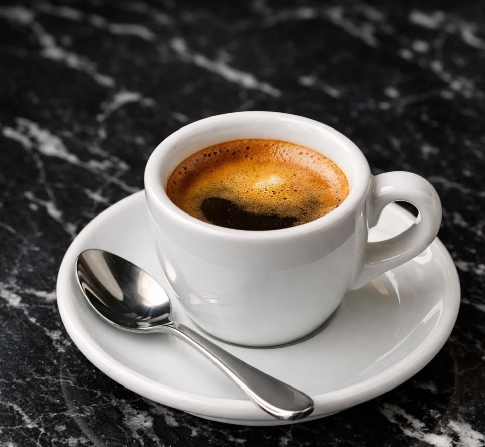
Espresso
Ingredients
- 18 g finely ground coffee
- Hot water (about 93°C)
Steps
- Fill the portafilter with the ground coffee and press it down firmly.
- Brew for 25 to 30 seconds.
- Serve right away in a small cup.
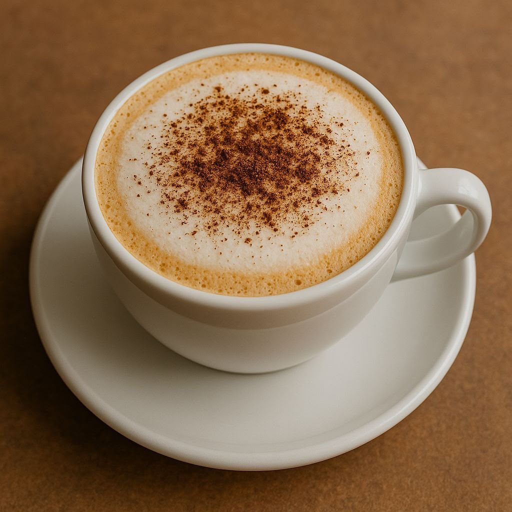
Cappuccino
Ingredients
- 1 shot of espresso (30 ml)
- 60 ml steamed milk
- 60 ml milk foam
Steps
- Brew the espresso shot into a cup.
- Steam the milk and keep the foam on top.
- Add the steamed milk, then spoon the foam over it.
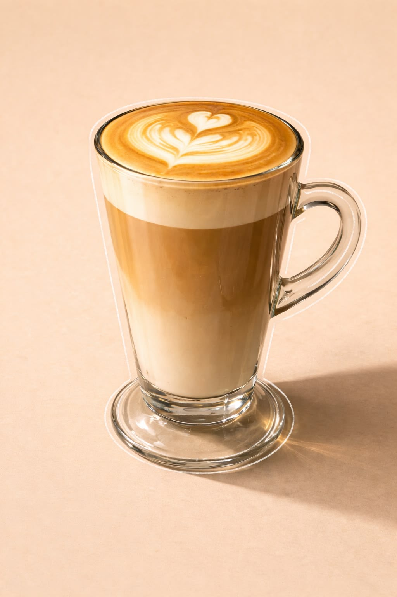
Latte
Ingredients
- 1 shot of espresso (30 ml)
- 200 ml milk
- 1 tsp sugar (optional)
Steps
- Brew the espresso shot into a cup.
- Steam the milk until hot and smooth.
- Pour the milk over the espresso and top with a thin layer of foam.
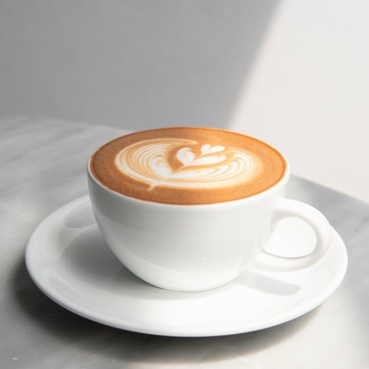
Flat white
Ingredients
- 2 shots of espresso (60 ml)
- 120 ml milk
Steps
- Brew the two espresso shots into a cup.
- Steam the milk until it is smooth with very little foam.
- Pour the milk slowly over the espresso.
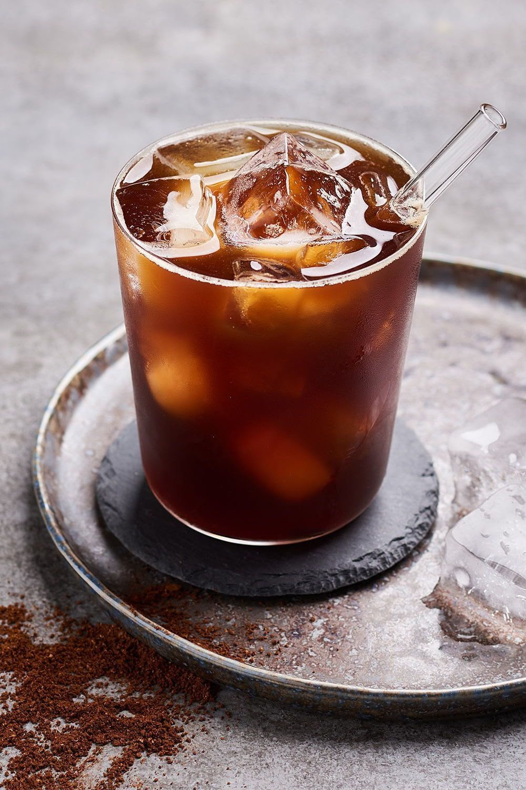
Americano
Ingredients
- 1 to 2 shots of espresso (30 to 60 ml)
- 150 ml hot water
Steps
- Brew the espresso into a cup.
- Add the hot water.
- Stir gently and serve.
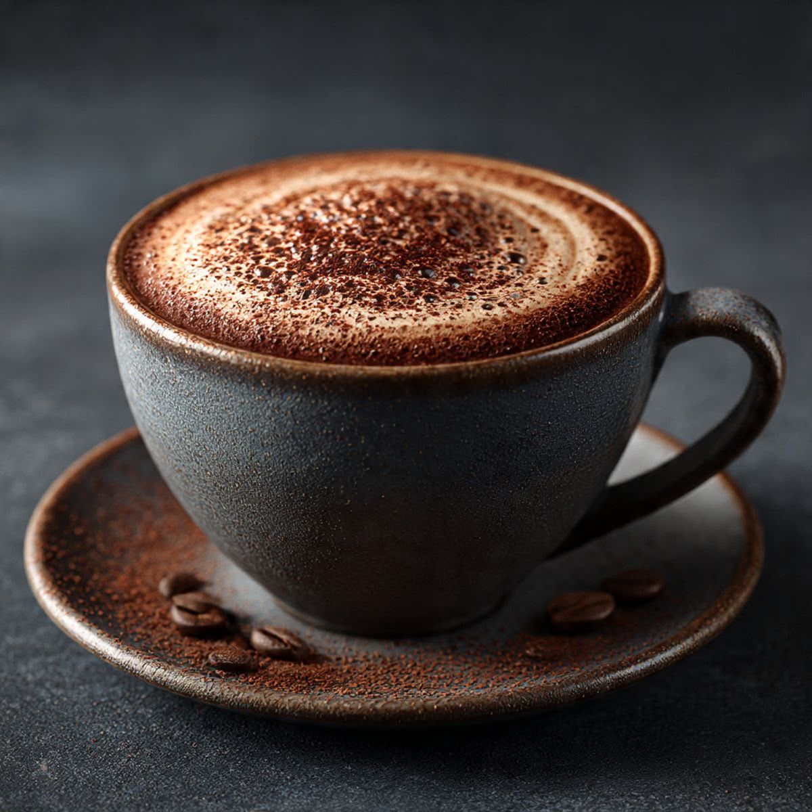
Mocha
Ingredients
- 1 shot of espresso (30 ml)
- 2 tbsp chocolate sauce
- 180 ml milk
- Whipped cream (optional)
Steps
- Mix the espresso with the chocolate sauce in a cup.
- Steam the milk until hot.
- Pour the milk into the cup and top with whipped cream.
Iced coffee
Ingredients
- 1 shot of espresso or 120 ml strong coffee
- 120 ml cold milk
- 1 tbsp sugar syrup
- A cup of ice
Steps
- Mix the coffee with the sugar syrup.
- Fill a glass with ice.
- Pour in the coffee, then add the cold milk.
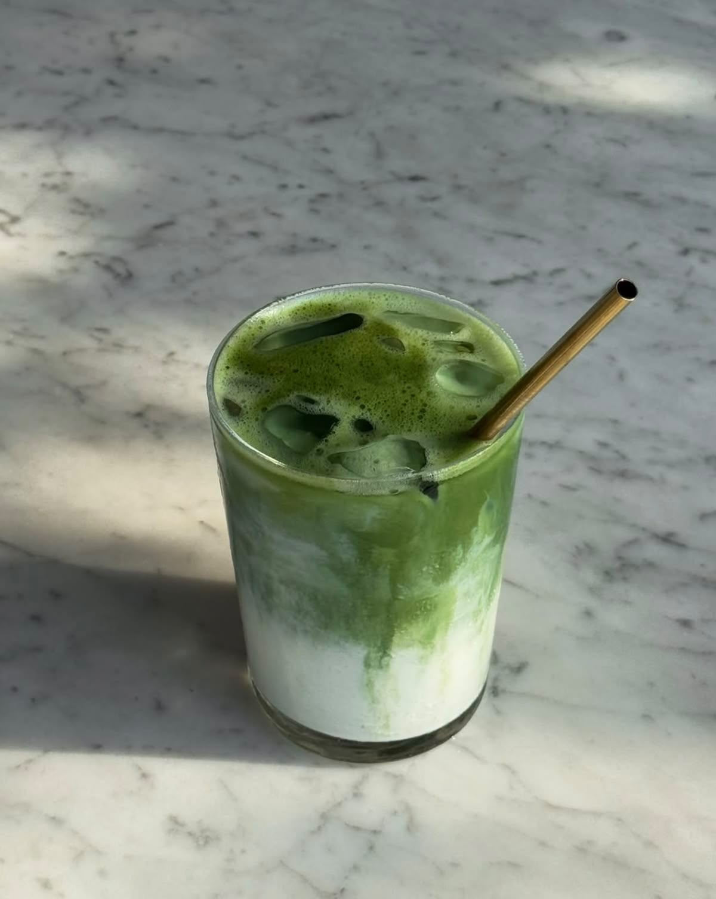
Matcha
Ingredients
- 2 g matcha powder
- 60 ml hot water (about 80°C)
- 180 ml milk
- 1 tsp honey or sugar
Steps
- Whisk the matcha powder with the hot water until smooth.
- Warm the milk and add the honey.
- Pour the milk over the matcha.
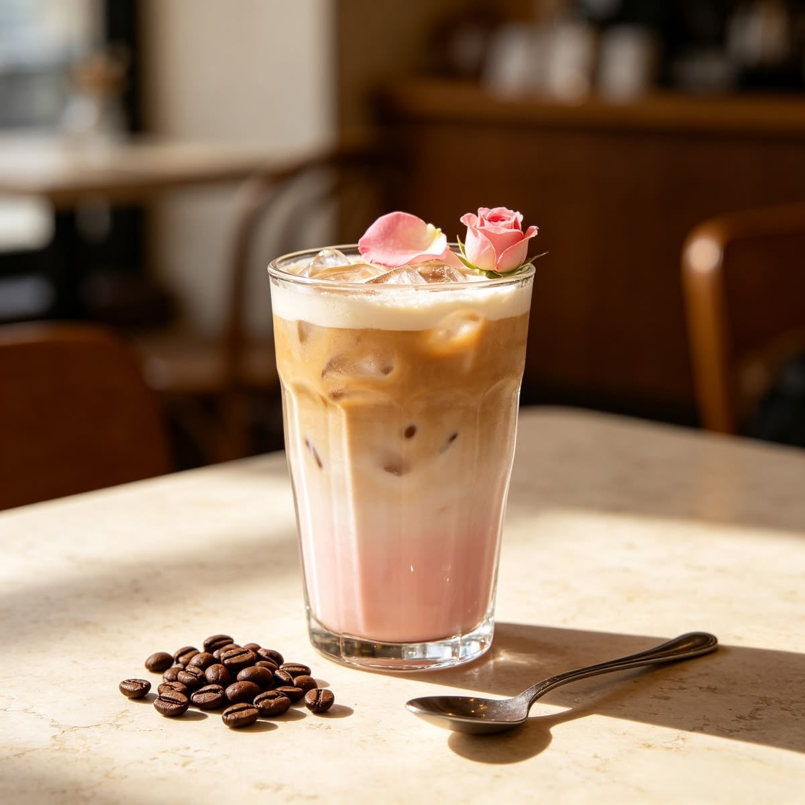
Rose latte
Ingredients
- 1 shot of espresso (30 ml)
- 200 ml milk
- 1 tbsp rose syrup
- Dried rose petals
Steps
- Stir the rose syrup into the espresso.
- Steam the milk until hot and smooth.
- Pour the milk into the cup and decorate with rose petals.
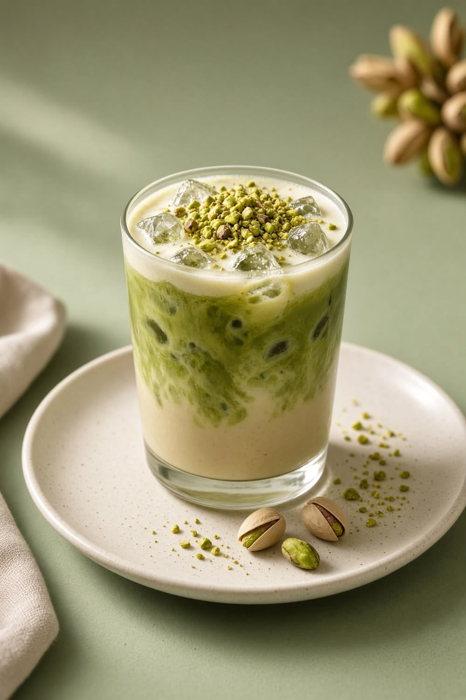
Pistachio latte
Ingredients
- 1 shot of espresso (30 ml)
- 200 ml milk
- 1 tbsp pistachio sauce
- Crushed pistachios
Steps
- Stir the pistachio sauce into the espresso.
- Steam the milk until hot and smooth.
- Pour the milk into the cup and sprinkle with crushed pistachios.
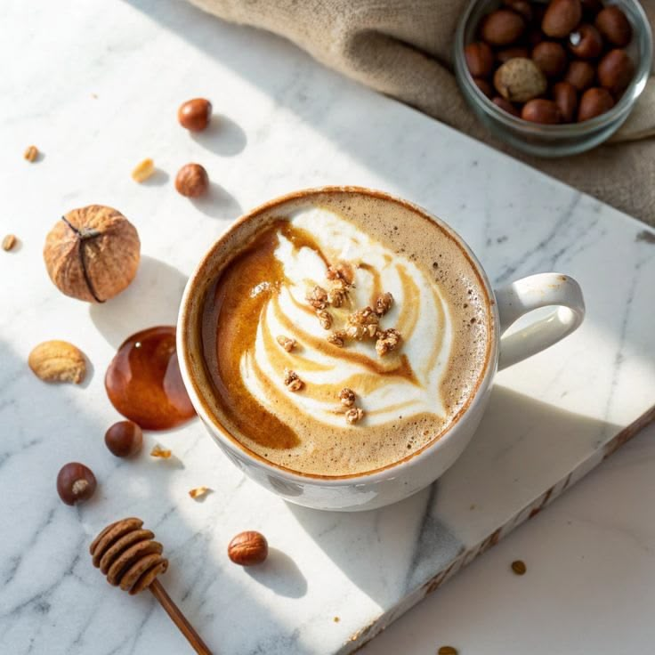
Hazelnut latte
Ingredients
- 1 shot of espresso (30 ml)
- 200 ml milk
- 1 tbsp hazelnut syrup
Steps
- Stir the hazelnut syrup into the espresso.
- Steam the milk until hot and smooth.
- Pour the milk into the cup and serve.
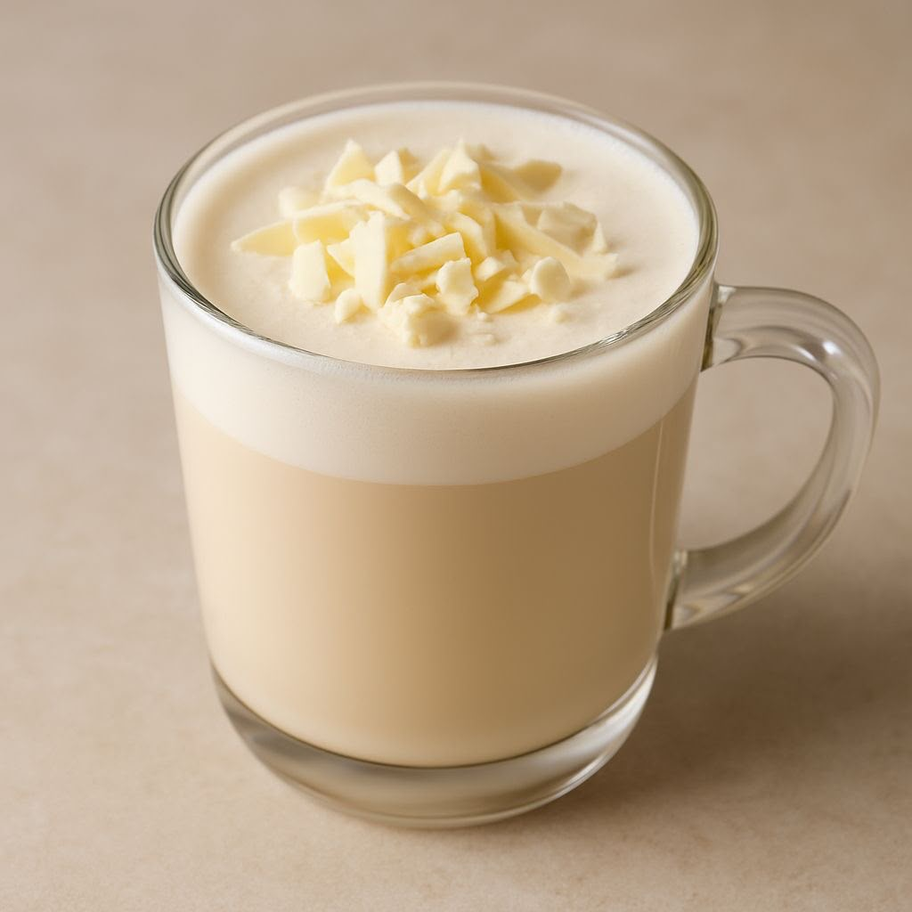
White mocha
Ingredients
- 1 shot of espresso (30 ml)
- 2 tbsp white chocolate sauce
- 200 ml milk
- Whipped cream (optional)
Steps
- Mix the espresso with the white chocolate sauce.
- Steam the milk until hot.
- Pour the milk into the cup and top with whipped cream.
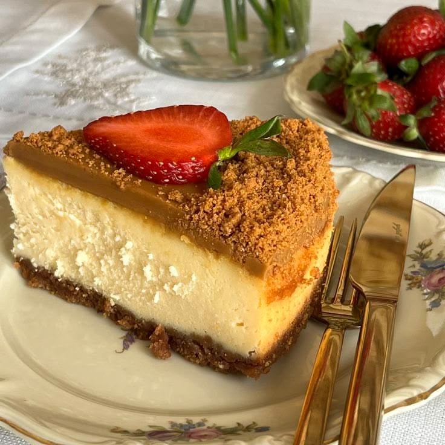
Cheesecake
Ingredients
- 200 g biscuits, crushed
- 100 g melted butter
- 500 g cream cheese
- 100 g sugar
- 2 eggs
- 1 tsp vanilla
Steps
- Mix the crushed biscuits with the butter and press them into a round pan.
- Beat the cream cheese with the sugar, eggs and vanilla until smooth.
- Pour the mix over the base and bake at 160°C for 40 to 45 minutes.
- Let it cool, then chill it for at least 4 hours.
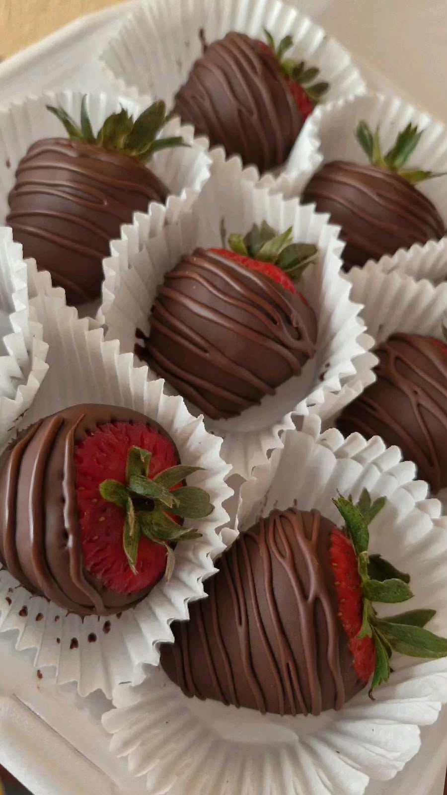
Chocolate brownie
Ingredients
- 150 g dark chocolate
- 120 g butter
- 150 g sugar
- 2 eggs
- 80 g flour
- A pinch of salt
Steps
- Melt the chocolate with the butter and let it cool a little.
- Stir in the sugar and eggs, then fold in the flour and salt.
- Pour into a lined pan and bake at 175°C for 20 to 25 minutes.
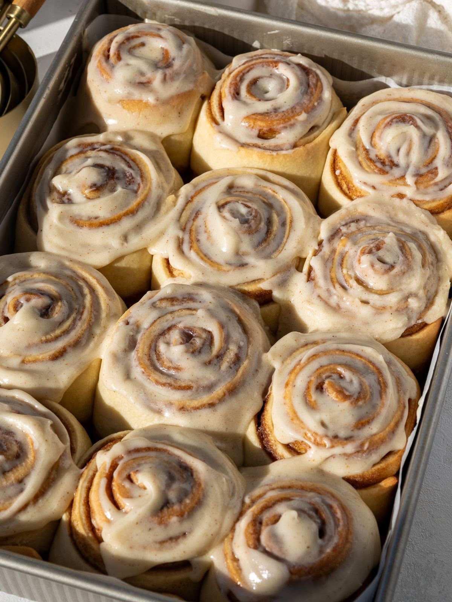
Cinnamon rolls
Ingredients
- 300 g flour
- 7 g instant yeast
- 120 ml warm milk
- 50 g sugar
- 1 egg
- 50 g butter
- Filling: soft butter, brown sugar and cinnamon
- Icing: powdered sugar and cream cheese
Steps
- Mix the dough ingredients and knead until smooth, then let it rise for 1 hour.
- Roll the dough out, spread the filling, roll it up and cut into slices.
- Let the rolls rise for 30 minutes, then bake at 180°C for 20 minutes.
- Spread the icing on the warm rolls.
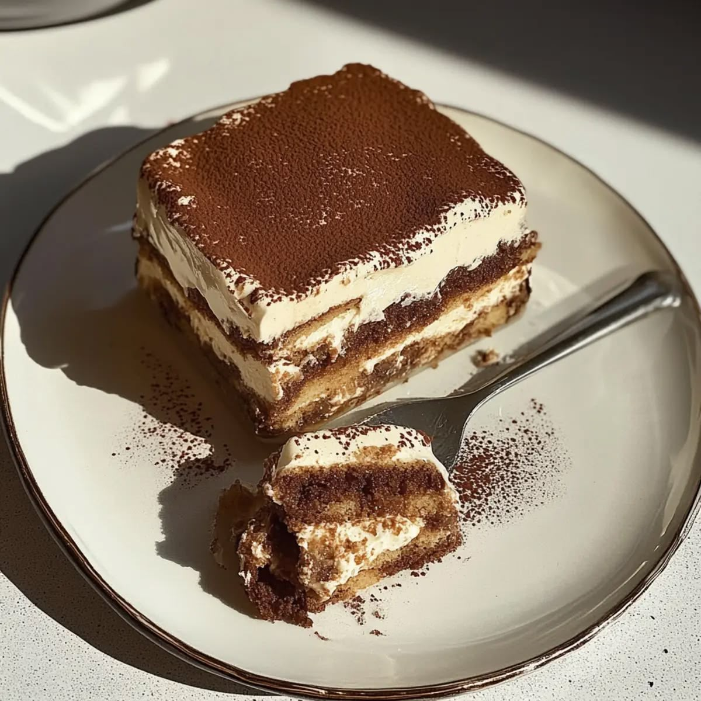
Tiramisu
Ingredients
- 250 g mascarpone
- 200 ml whipping cream
- 50 g sugar
- 200 ml strong coffee, cooled
- 200 g ladyfinger biscuits
- Cocoa powder
Steps
- Whip the cream with the sugar, then fold in the mascarpone.
- Dip the biscuits quickly in the coffee and arrange a layer in a dish.
- Cover with half of the cream, then repeat the layers.
- Chill for 4 hours and dust with cocoa powder before serving.
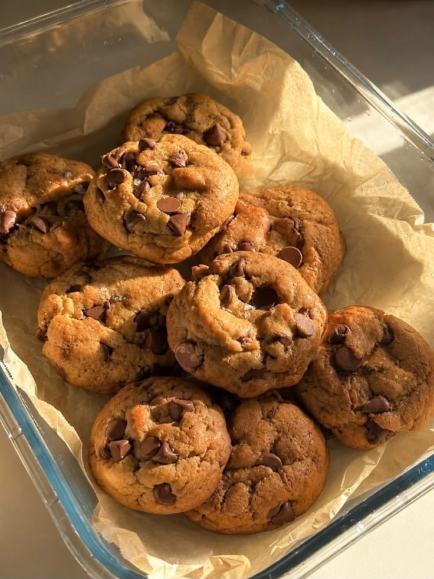
Cookies
Ingredients
- 125 g butter
- 100 g brown sugar
- 50 g sugar
- 1 egg
- 180 g flour
- 1/2 tsp baking soda
- 150 g chocolate chips
Steps
- Beat the butter with both sugars, then add the egg.
- Mix in the flour and baking soda, then fold in the chocolate chips.
- Place spoonfuls of dough on a tray and bake at 180°C for 10 to 12 minutes.
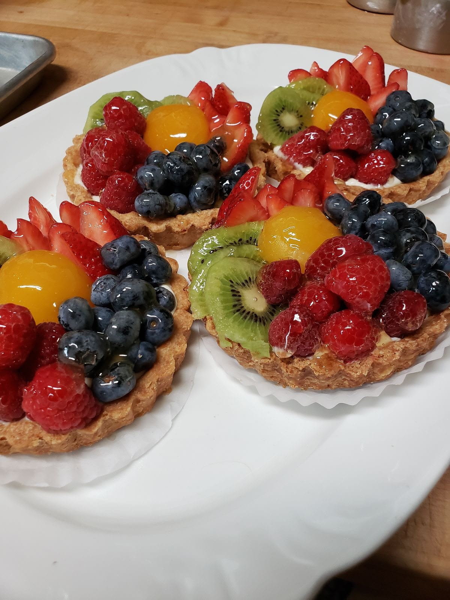
Mini fruit tarts
Ingredients
- 12 mini tart shells
- 200 ml pastry cream or whipped cream
- Strawberries, kiwi and blueberries
- 2 tbsp apricot jam
Steps
- Fill each tart shell with cream.
- Arrange the fruit on top.
- Warm the jam with a little water and brush it over the fruit.
Chocolate dipped strawberries
Ingredients
- 12 strawberries
- 150 g dark or milk chocolate
- Sprinkles (optional)
Steps
- Wash the strawberries and dry them well.
- Melt the chocolate and dip each strawberry in it.
- Place them on baking paper, add sprinkles, and chill for 20 minutes.
Chicken pesto panini
Ingredients
- 2 slices of panini or ciabatta bread
- 100 g cooked chicken
- 1 tbsp pesto
- Mozzarella slices
- Tomato slices
Steps
- Spread the pesto on the bread.
- Add the chicken, tomato and mozzarella, then close the sandwich.
- Press it in a hot panini press or pan for 3 to 4 minutes on each side.
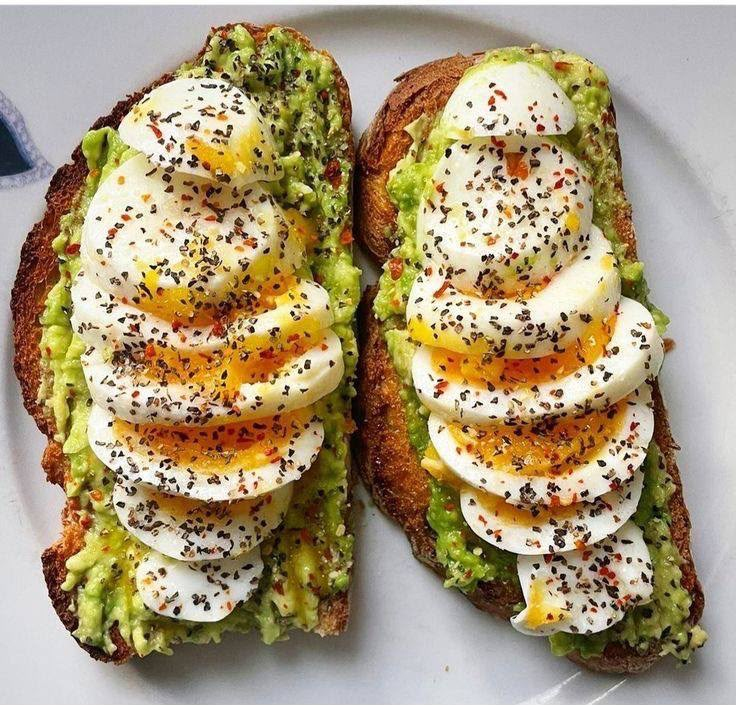
Avocado toast
Ingredients
- 2 slices of bread
- 1 ripe avocado
- 1 tsp lemon juice
- Salt and pepper
- Chili flakes (optional)
Steps
- Toast the bread.
- Mash the avocado with the lemon juice, salt and pepper.
- Spread it on the toast and add chili flakes.
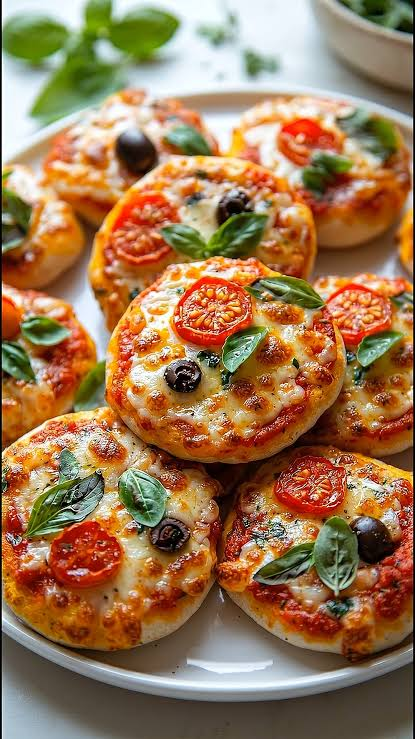
Mini margherita pizza
Ingredients
- 150 g pizza dough
- 3 tbsp tomato sauce
- 60 g mozzarella
- Fresh basil leaves
- 1 tsp olive oil
Steps
- Heat the oven to 220°C.
- Roll the dough into a small circle and spread the sauce on it.
- Add the mozzarella and bake for 8 to 10 minutes.
- Top with basil and olive oil.
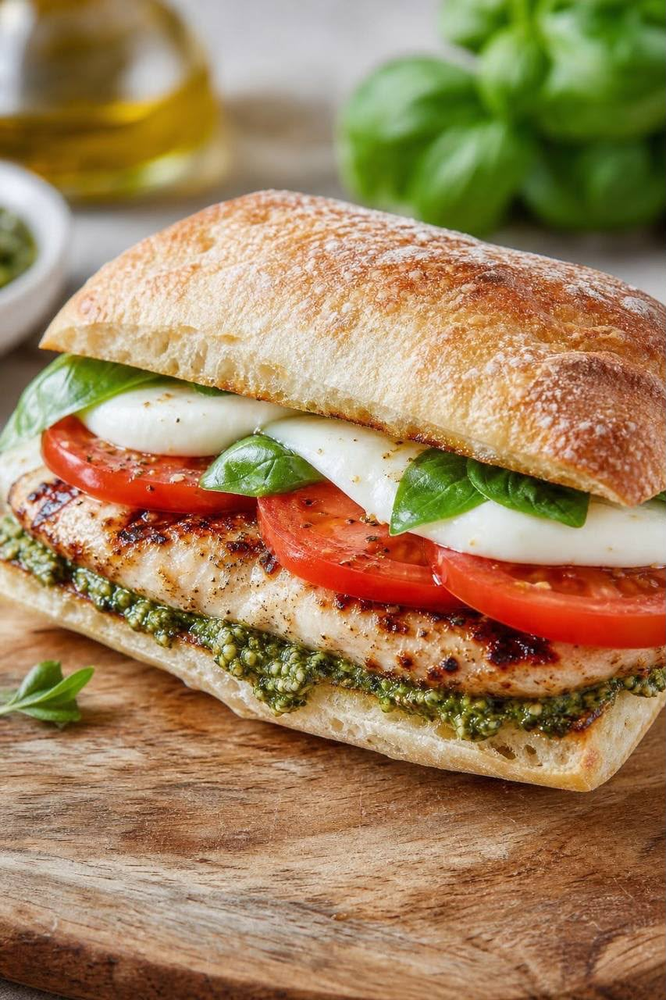
Grilled halloumi sandwich
Ingredients
- 100 g halloumi slices
- 2 slices of bread or a bun
- Tomato and rocket leaves
- 1 tsp olive oil
Steps
- Grill the halloumi for 2 minutes on each side.
- Toast the bread.
- Add the halloumi, tomato and rocket to the bread and serve warm.
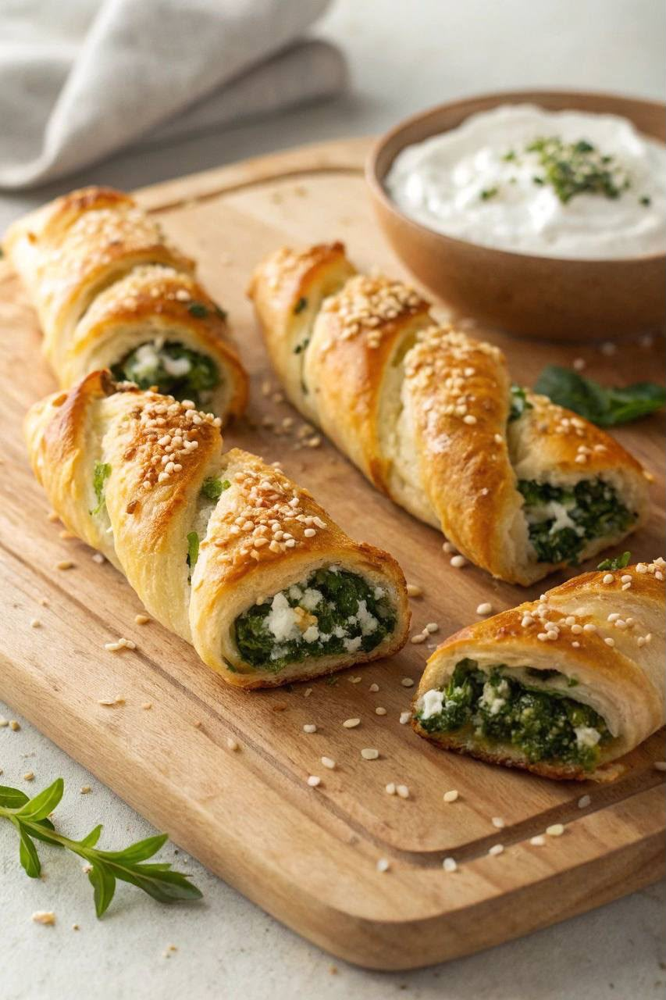
Spinach and feta pastry
Ingredients
- 1 sheet of puff pastry
- 150 g spinach
- 100 g feta cheese
- 1 egg, beaten
Steps
- Cook the spinach until soft, squeeze out the water and mix it with the feta.
- Cut the pastry into squares, add the filling and fold them closed.
- Brush with the egg and bake at 200°C for 15 to 20 minutes.
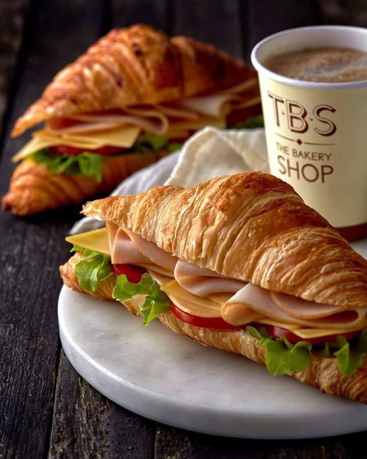
Turkey and cheese croissant
Ingredients
- 1 croissant
- 3 slices of turkey
- 2 slices of cheese
Steps
- Cut the croissant in half.
- Add the turkey and cheese.
- Warm it in the oven at 180°C for 5 minutes until the cheese melts.
Next: About Us